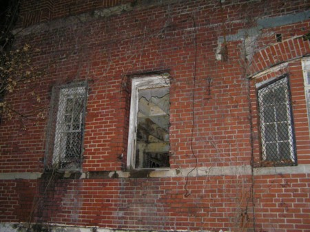

|
Click on any of the titles in the option box below to view the photo:
The Roseville Prison is located off OH-93 in Roseville, Ohio. It is on private property, and the owners keep a close watch on it. If you really want to see it, please be respectful and just drive by. You can see plenty from the road.
The Roseville Prison is no longer active, and it is owned by a private individual. It was a satellite prison of the Ohio State Penitentiary in Columbus, Ohio. The other satellite prison was located in Junction City; it was demolished in the Spring of 2005. Prisoners with good behavior were sent to the satellite prisons to work at the brick plants.
The Roseville Prison is supposedly haunted. The most popular story about it is "The Lady in White." Legend has it that if you visit the prison at night, you can see the apparition of a young woman in a white dress jump to her death from the roof of the main prison building. Others claim that you can see the prisoners wander through the hallways - there have been reports of people being touched, hearing cell doors slam, and noticing strange lights and sounds.
In October 2006 I received an e-mail from Kyle M. regarding his experiences at the prison:
This past summer, me and a good friend of mine, Gordy, went to the prison at night. We drove from the south end of Grove City to the prison directly. A nice trip down. But, just before we pulled up in front of the prison, the temperature light turned on in the Buick we were driving in. We pulled up in the gravel road behind the guard tower and shut off the car. I got out and checked the engine coolant in the radiator, and in the overflow tank. There was plenty of fluid in both. But the fluid was boiling. I felt the hoses, and they had fluid in them too, boiling. But on the drive to Shawnee and Nelsonville, we had no trouble? I don't know. But while we were letting our eyes adjust to the dark, we kept hearing rustling sounds around the tower and in the brush behind it. We both assumed animals, but saw no reflection of their eyes. Then we proceeded across the street to the prison. Up the wall in front and continuing along the fence, in the corner, there is a gap in the fence that we got through. We saw no woman in white reenacting her suicide, but, when we got on the other side othe the fence, we both heard something. Coming from what sounded like a distant stairwell, there was a faint tapping and shuffling sound. It was not consistant, and there was no pattern to the sounds. I felt two things hit me, but my friend, didn't feel anything. I wanted to go in, but with only a buck knife and a big flashlight, we decided we didn't want to find out who or what was making those sounds. We decided to come back at a later time in the year, packing hardware. I shit you not, the second that we got back on the other side of the fence, the noise stopped. We crossed the street and left. Not a sound from the prison or the guard tower, not even a breeze.
In November 2007 I received an e-mail from Marte regarding the Roseville Prison:
My grandpa was a warden there in the 1960's. I used to play in the yard and in front of the wall. I also raised my children in a nearby town. The place was used for a while for teens to go paintballing on Sunday afternoons. If it was really haunted then the locals would have done more than paint ball there, never have I heard one word about hauntings.
In November 2008 I received an e-mail from Donnie regarding the Roseville Prison:
I've lived next door for years, and the only trouble ever caused by "residents" was when the current owner threatened to kick my ass.
In January 2009 I received an e-mail from Curtis regarding the Roseville Prison:
I've been to Roseville Prison several times. My dad works for the owners. I have walked through the main prison several times and never felt anything or saw anything but some rude trespassers that almost got shot.
In July 2010 I received an e-mail from John R. regarding the Roseville Prison:
I was over there last weekend. The place has a chain link fence around it, and a family owned trucking company stores trucks on site and along the road. They are waiting for you as soon as you park, to chase you away.
In October 2010 I received an e-mail from Erica W. regarding the Roseville Prison:
I grew up in Roseville. In my teenage years it was the "cool thing to do" to break into the prison at night. I was in there a lot. We used to go on the roof and watch the chief of police (Jeff, who is STILL the chief) drive by and laugh. The one time we went in at night we swore we saw things moving (Probably our over active imagination due to hearing all the old ghost stories). You can still see where it was set up for paintball and where they did a haunted house. I spent many nights in my late teenage years in that prison.
I received an e-mail from Jeanne S. in January 2011 with an observation regarding one of my photos:
That middle window looks like a woman looking out. Do you see it?
Here is the photo she is referring to:

I received an e-mail from Terry in July 2011 about the prison:
A few friends and I decided to investigate the creepy prison after discovering it on the web. We got there and there and took some photos. Several orbs appeared in six of the photos. As we were leaving an old man came out of nowhere shooting a 9mm at us! He almost shot me in the head! He was screaming that we were tresspassing. Although there were not any "No Tresspassing" signs and the main gate was wide open. We tried to leave but he would not allow us at first. He made us line up against the main gate and continued to demand an explanation. We tried to tell him that we were simply investigating stories we had read about, and that we were not there to cause harm or vandalize anything (as you can tell someone had vandalized the prison prior) and that we just wanted to leave and not come back. After he fired another shot he let us leave. So all in all I believe the prison is haunted (due to the unmistakable orbs in the photos) but I do not suggest that anyone go there! You may lose your life!
And I think that is good advice. Seriously, it's risky to visit places like this without permission. Why take the chance?
Where do you want to go? Select your destination:
|